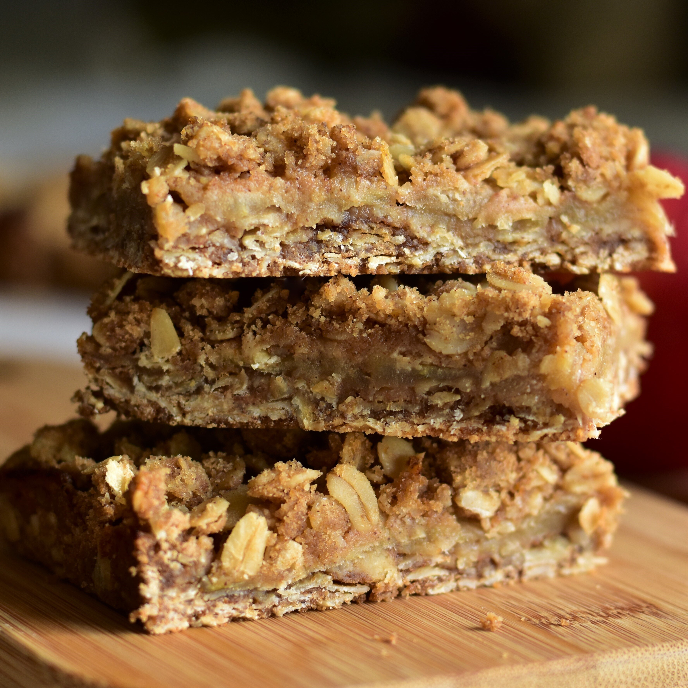

Brown Butter Apple Crisp Bars

Description
These bars are a delicious new way to enjoy apple crisp.
Ingridients
- ½ cup unsalted butter
- 2 large Granny Smith apples - peeled, cored, and thinly sliced
- 2 tablespoons firmly packed brown sugar
- 2 tablespoons unsalted butter
- 1 teaspoon lemon juice
- 1 ¼ teaspoons ground cinnamon, divided
- 1 pinch salt
- 2 teaspoons water
- 1 teaspoon cornstarch
- 1 ½ cups rolled oats
- ¾ cup all-purpose flour
- ½ cup firmly packed brown sugar
- 1 teaspoon vanilla extract
- ½ teaspoon baking soda
- ¼ teaspoon ground nutmeg
- ¼ teaspoon salt
Steps:
- Place 1/2 cup butter in a medium, light-colored saucepan over medium-low heat. Cook, swirling often, until butter is browned and fragrant, about 10 minutes. Pour into a large mixing bowl and set brown butter aside.
- Combine apples, 2 tablespoons brown sugar, 2 tablespoons butter, lemon juice, 1/4 teaspoon cinnamon, and pinch of salt in the same saucepan. Place the pan back over medium-low heat and cook, stirring occasionally, until apples are softened, about 10 minutes.
- Mix water and cornstarch together in a small bowl or measuring cup. Pour mixture into the saucepan and stir to combine. Cook until mixture thickens slightly, 1 to 2 more minutes. Remove pan from the heat and let cool slightly.
- Preheat the oven to 350 degrees F (175 degrees C). Line a 9x9-inch square baking pan with enough parchment paper to have overhang on all sides.
- Add oats, flour, 1/2 cup brown sugar, remaining 1 teaspoon cinnamon, vanilla, baking soda, nutmeg, and 1/4 teaspoon salt to the brown butter and mix until well combined. Measure out 1 cup of this mixture and set aside for topping.
- Pour remaining oat mixture into the prepared pan; firmly press into an even layer. Pour apples and sauce over the crust and spread into an even layer. Sprinkle with reserved oat mixture.
- Bake in the preheated oven until top is golden brown and crisp, 30 to 35 minutes. Remove from the oven and let cool completely, about 30 minutes, before slicing into 16 bars.